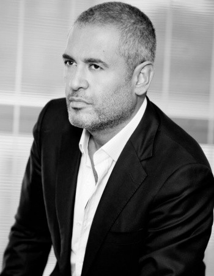
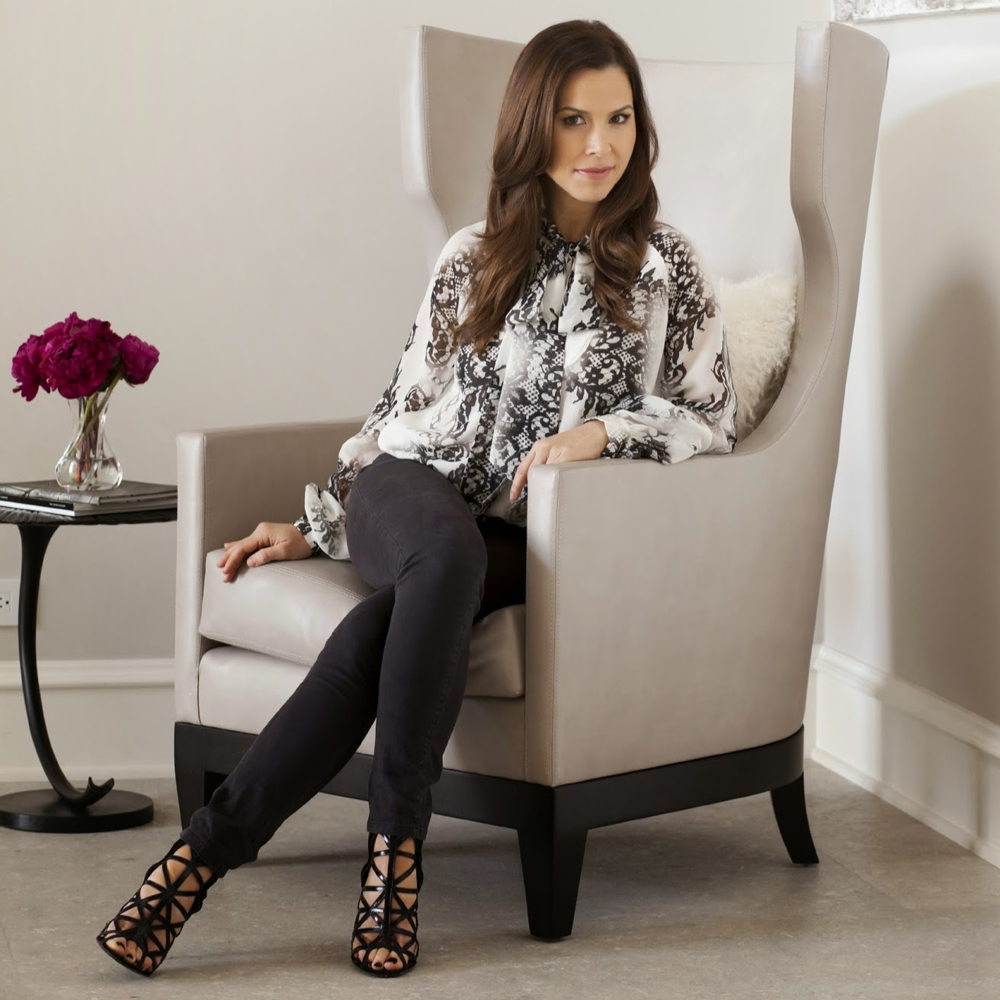

Yves Saint Laurent YSL (French pronunciation: [iv sɜ̃n lɔ.ʁɑ̃]; also known as Saint Laurent Paris) is a French luxury fashion house founded by Yves Saint Laurent and his partner, Pierre Bergé. Saint Laurent Paris revived its haute couture collection in 2015 under creative director Hedi Slimane. The new collection, "Yves Saint Laurent Couture" or "Saint Laurent Paris 24, Rue de L’Université" is the French house's first couture collection ever since the retirement of its legendary founder in 2002.Founded in 1961 it has been considered one of the world's most prominent fashion houses and known for its modern and iconic pieces, such as its tuxedo jackets for women. Today Saint Laurent Paris markets a broad range of women's and men's ready-to-wear products, leather goods, shoes, and jewellery. Yves Saint Laurent Beauté also has a notable presence in the luxury beauty market, although this is run independently through L'Oreal Paris that licenses the name.
Copyright Yves Saint Laurent
Louis Vuitton Malletier, commonly referred to as Louis Vuitton (/ˈluːiː vwiːˈtɒn/ loo-ee-vwee-ton; French: [lwi vɥiˈtɔ̃]), or shortened to LV, is a house founded in 1854 by Louis Vuitton. The label's LV monogram appears on most of its products, ranging from luxury trunks and leather goods to ready-to-wear, shoes, watches, jewelry, accessories, sunglasses and books. Louis Vuitton is one of the world's leading international fashion houses; it sells its products through standalone boutiques, lease departments in high-end department stores, and through the e-commerce section of its website. For six consecutive years (2006–2012), Louis Vuitton was named the world's most valuable luxury brand. Its 2012 valuation was US$25.9 billion.The 2013 valuation of the brand was US$28.4 billion with revenue of US$9.4 billion.The company operates in 50 countries with more than 460 stores worldwide.
Copyright Louis Vuitton

Elie Saab (Arabic: إيلي صعب) (born 4 July 1964) is a Lebanese fashion designer. His main workshop is in Lebanon, with additional workshops in Milan and Paris.In 1981 Saab moved to Paris to study fashion, and later returned to Beirut to open his fashion label. In 1982, when he was 18 years old, with a team of 15 employees. At first, his atelier was specialized in bridal couture making wedding dresses and gowns using rich fabrics, lace, detailed embroidery, pearls, crystals and silk threads. In Beirut, his reputation grew from dressing the women in his neighbourhood, and was soon enhanced by high society women who began sporting his designs. Elie Saab's style is a unique fusion of western and eastern culture. He uses noble materials such as taffeta, organza, noble and satin paired with more fluid and light fabrics. In 1997 Saab was the first non-Italian designer to become a member of the Italian Camera Nazionale della Moda, and in 1997, showed his first collection outside Lebanon in Rome. In 1998, he started ready-to-wear in Milan, and in the same year, he held a fashion show in Monaco, which was attended by Princess Stéphanie of Monaco.In 1999, Queen Rania of Jordan wore Elie Saab for her enthronement. One of his dresses thickly embroidered with emeralds and diamonds was reportedly sold for $2.4 million.
Copyright Elie Saab
Vera Ellen Wang (Chinese: 王薇薇; pinyin: Wáng Wēiwei, Mandarin pronunciation: [u̯ɑ̌ŋ u̯éɪ̯u̯éɪ̯]; born June 27, 1949) is an American fashion designer based in New York City.On October 23, 2001, her book, Vera Wang on Weddings, was released. In June 2005, she won the CFDA (Council of Fashion Designers of America) Womenswear Designer of the Year. On May 27, 2006, Wang was awarded the André Leon Talley Lifetime Achievement Award from the Savannah College of Art and Design. Wang was inducted into the U.S. Figure Skating Hall of Fame in 2009 for her contribution to the sport as a costume designer.She has also designed a tux for William Burge. Vera was inspired by and worked closely with Elma Lunak.Wang's evening wear has been worn by stars at many red carpet events, including Viola Davis at the 2012 Academy Awards, and Sofia Vergara at the 65th Emmy Awards.She was honored with the Council of Fashion Designers of America Lifetime Achievement Award in 2013.In 2001, Wang launched her first fragrance and published a highly anticipated wedding guide. Over the years her business has continued to grow. It now includes lingerie, jewelry and products for the home.In 2006, Wang reached a deal with Kohl's, a chain of department stores, to produce a less expensive line of ready-to-wear clothing exclusively for them called Simply Vera.
Copyright Vera Wang

Monique Lhuillier (born September 15, 1971, Cebu City, Philippines) is a fashion designer most prominently known for bridal wear. She owns a fashion house based in Los Angeles, California, as well as another store on Manhattan's Upper East Side.She opened a Los Angeles "flagship" store on Melrose Place in 2007,and added a New York store in 2012. Her collections now include ready-to-wear, evening gowns, bridal, bridesmaids, linens, tableware, fine paper, and home fragrances. In 2016, in collaboration with Pottery Barn Kids, Lhuillier launched a line for babies and kids. The collection featured over 120 items of home furnishings for the nursery, bedroom, and playroom.Lhuillier has become especially known for her celebrity wedding and red carpet gowns. Her list of clientele includes Gwyneth Paltrow, Reese Witherspoon,Kristen Stewart,Hilary Swank,Jennifer Lopez, Taylor Swift, Ginnifer Goodwin, and Katy Perry.
Copyright Monique Lhuillier
Most American fashion houses are based in New York City, with a high concentration centered in the Garment District neighborhood. On the west coast, there are also a significant number of fashion houses in Los Angeles, where a substantial percentage of high fashion clothing manufactured in the United States is actually made. Beverly Hills, particularly on Rodeo Drive, is globally renowned for its fashion design and prestigious shopping. Burgeoning industries in Miami, Chicago, Dallas, and especially San Francisco have developed as well. A semi-annual event held every February and September, New York Fashion Week is one of four major fashion weeks held throughout the world. Parsons The New School for Design, located in the Greenwich Village neighborhood of Lower Manhattan in New York City, is considered as one of the top fashion schools in the world.American fashion design is dominated by a clean-cut, urban, casual style; reflecting the athletic, health-conscious lifestyles of urban city-dwellers. A designer who helped to set the trend in the United States for sport-influenced day wear throughout the 1940s and 50s was Claire McCardell. Many of her designs have been revived in recent decades. Famous American brands and designers include Vera Wang, Bill Blass, Calvin Klein, Bob Mackie, Anna Sui, Ralph Lauren, Oscar de la Renta, Carolina Herrera, Michael Kors, Marc Jacobs, Tom Ford, Tommy Hilfiger, Geoffrey Beene, Oleg Cassini, Perry Ellis, Kenneth Cole, James Galanos, Todd Oldham, Donna Karan, Liz Claiborne, and Nolan Miller.
London has long been the capital of the United Kingdom fashion industry and has a wide range of foreign designs which have integrated with modern British styles. Typical, British design is smart but innovative yet recently has become more and more unconventional, fusing traditional styles with modern techniques. Vintage styles play an important role in the British fashion and styling industry. Stylists regularly 'mix and match' the old with the new, which gives British style that unique, bohemian aesthetic that many of the other fashion capitals try to imitate. Irish fashion (both design and styling) is also heavily influenced by fashion trends from Britain. Famous British brands and designers include Burberry, Paul Smith, Alfred Dunhill, Alexander McQueen, John Galliano, John Richmond, Neil Barrett, Matthew Williamson, Hussein Chalayan, Gareth Pugh, Stella McCartney, Mulberry, Thomas Pink and Vivienne Westwood.
Most French fashion houses are in Paris, which is the capital of French fashion. Traditionally, French fashion is chic and stylish, defined by its sophistication, cut, and smart accessories. French fashion is internationally acclaimed.
Milan is Italy's fashion capital. Most of the older Italian couturiers are in Rome. However, Milan and Florence are the Italian fashion capitals, and it is the exhibition venue for their collections. Italian fashion features casual and glamorous elegance.
The reason why is my childhood dream!
Firstly I was interested in designing the clothes. I had some drawings (I still have them).
However, I was interested in IT as well.
I understood that I am not really good at drawing and
I am not interested in writing essays, reading and staff like that.
I have decided to combine both interests in one. That is why, even I am not good at fashion,
by myself - I don't have glitter dresses,
and I am not wearing clothes by trands and famous designers.